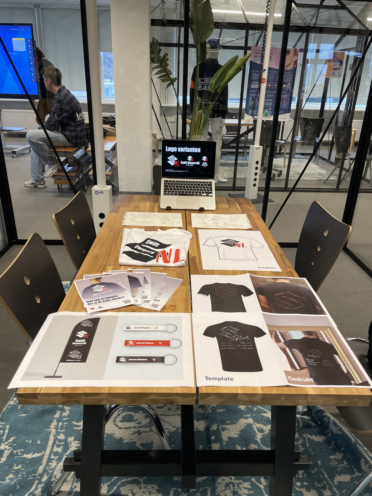
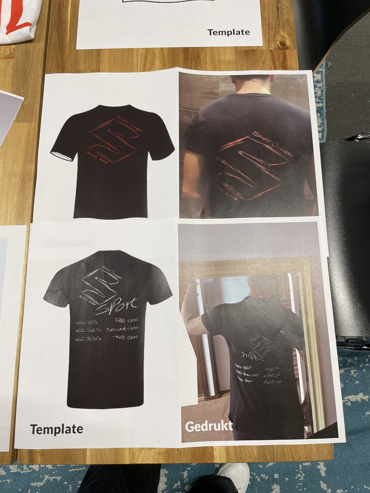
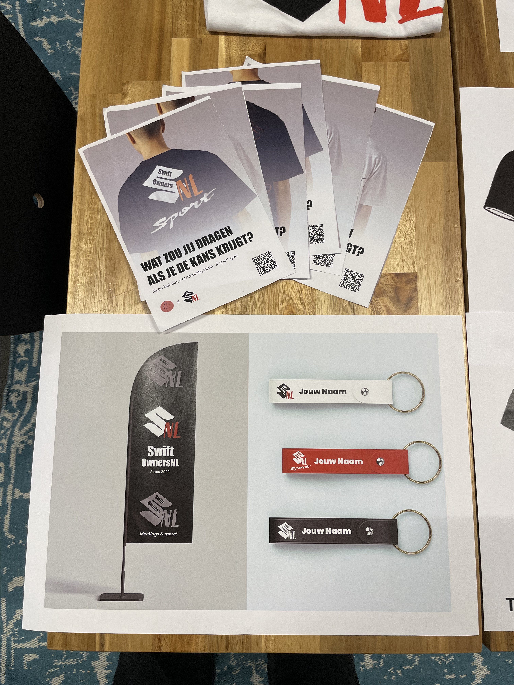
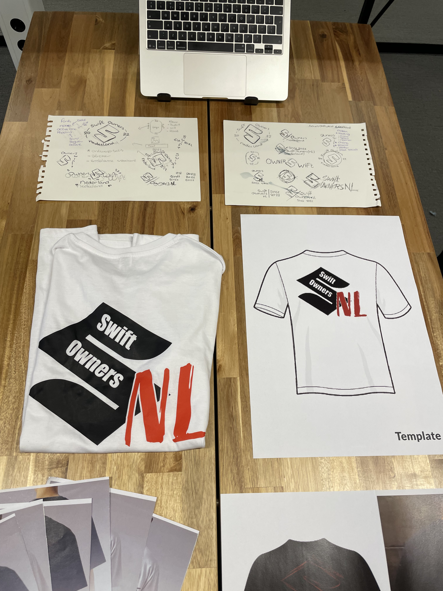

Mijn meesterwerk | Werkschouw
Na 5 weken heb ik mijn eindresultaat mogen presenteren aan mijn medeklas- en schoolgenoten, tijdens de werkschouw op school.
Tijdens het werkschouw heb ik verschillende dingen laten zien, zoals mijn schetsen, kledingdrukwerk voor vrienden en fysiek op tafel en nieuwe drukwerk voor vlaggen.
Benieuwd hoe mijn proces is verlopen? Bekijk dan mijn procespagina, waar ik alles laat zien van begin tot eind van week 1 tot week 5.



